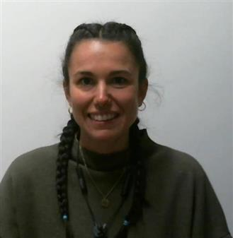
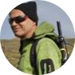
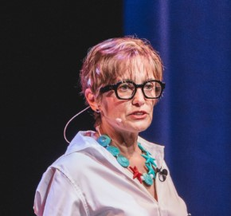

Geomatics
GNSS, UAV photogrammetry, LiDAR, remote sensing, and GIS for updated and precise spatial data.


Rifugio Amprimo · Orsiera Rocciavrè Natural Park · Susa Valley, Italy
From geospatial data to climate-resilient mountain planning: a field-based international programme where MSc students collect data, interpret mountain processes and translate evidence into planning-oriented outputs.
Geo2Plan is a 7-day international Summer School organized by Politecnico di Torino, held from 30 August to 6 September 2026 in the Orsiera Rocciavrè Natural Park, with all activities based at Rifugio Amprimo, 1385 m.
The programme integrates geomatics, geology and spatial planning to address climate-change-related challenges in mountain territories. Students work in interdisciplinary teams on a complete real-world workflow: field data acquisition, map-based processing, geological interpretation and planning-oriented recommendations.
MSc students in Civil and Environmental Engineering, Geology, Territorial, Urban, Environmental and Landscape Planning, and related disciplines.
The school combines technical data production, geological interpretation and spatial planning in one coherent educational framework.
GNSS, UAV photogrammetry, LiDAR, remote sensing, and GIS for updated and precise spatial data.

Field observation and interpretation of geological and geomorphological features, processes, sensitivities and constraints.

Use of spatial evidence to define strategies for climate adaptation, sustainable development and territorial management.
All activities take place at Rifugio Amprimo, inside the Orsiera Rocciavrè Natural Park.
The refuge is located at 1,385 m. and can be reached from Paradiso delle Rane or Borgata Sagnette with an easy 15–20 minute walk. The refuge is not accessible by car. It is Participants meet at Bussoleno railway station and reach the beginning of the walking path by organised bus transfer.

The week is designed as a complete field-to-decision workflow: students first explore the climate and territorial context, then collect and process spatial data, interpret geological and ecological processes, and finally transform results into planning-oriented outputs—through hands-on field activities, talks, and workshops with European and local experts.
Arrival and orientation. Students meet at Bussoleno railway station, reach Rifugio Amprimo by organized bus, settle in, meet the teaching team and are introduced to the study area, logistics and programme. Ice breaking with Climate Fresk game.
Climate Fresk is a collaborative boardgame used as an ice-breaking activity and as a first shared framework for the Summer School. Guided by certified DIATI facilitators, students explore the causes and impacts of climate change and discuss possible responses in an interactive and team-based setting.
Geomatics data acquisition. Introduction to main geomatics techniques: GNSS, UAV photogrammetry, LiDAR and Copernicus land-cover products. Outdoors data collection of real spatial data around the refuge using geomatics instruments.
Nimbus and the Italian Meteorological Society contribute a climate monitoring and communication talk focused on meteorological events, long-term climate data series, climate and glacier monitoring in the Western Alps, and the dissemination of atmospheric and environmental sciences.
Geological field interpretation. Field observation and mapping of the main geological and geomorphological features of the study area, supported by Politecnico di Torino staff and Alberto Corno for geological cartography. The day moves from field observation to a guided interpretation discussion.
Alberto Corno is a geologist and young academic at the Dipartimento di Scienze della Terra of the Università degli Studi di Torino (University of Turin), where he is affiliated as a researcher and/or faculty member in the Earth Sciences department. He is part of the ARG Project – Geological Map of Italy 1:50,000, the national Italian program for producing the official Geological Map of Italy at 1:50,000 scale.
Luca Giunti is a park ranger with the Protected Areas of the Alpi Cozie. A naturalist and photographer (#sbaluf), he is involved in EU LIFE projects and is the author of both popular science and scientific articles. He’s an expert in the Orsiera Rocciavrè Park’s fauna and flora, ecosystem structure and dynamics, with a focus on natural processes and environmental interactions.
Planning, society and mountain territories. Translation of climate and environmental information into territorial analysis and adaptation strategies. Afternoon visit to Alpeggio "Balmetta" and lecture by Prof. Milan Kobal
The visit to Alpeggio Balmetta is organised as a field-based “merenda” linking planning with lived mountain economies. Students meet a traditional alpine pasture manager and discuss production, marginality, accessibility and landscape management, followed by tasting of local Park-certified products.
Milan Kobal is an Adjunct Professor at the University of Ljubljana, specializing in forest monitoring, remote sensing, and spatial analysis of natural resources. His research focuses on the integration of Earth observation data for forest management, ecosystem assessment, and environmental planning.
Integrated mountain field day and data processing. Students take part in a guided field outing combining environmental interpretation, mountain processes and territorial dynamics. In the afternoon, PhD Frederic Berger' lecure.
Frédéric Berger is a senior research scientist at INRAE, specializing in mountain ecology, climate change impacts, and long-term environmental monitoring in mountain ecosystems. His research addresses ecosystem dynamics, biodiversity, and the use of ecological data to support sustainable land and risk management strategies.
Open mapping and advanced geomatics workflow. Students work with Wikimedia Italia in a Mapping Party to select, validate and publish geographic information on OpenStreetMap. The day closes with an advanced lecture by Francesco Nex on integrated geomatics workflows for mountain environments.
The Mapping Party is a collaborative event where experienced mappers and beginners work together to improve OpenStreetMap. Students use the knowledge and data collected during the previous days to identify useful geographic information, validate it with faculty guidance and contribute to open geodata.
Francesco Nex is Adjunct Professor in Earth Observation Science at the University of Twente, where he develops innovative UAV, photogrammetry and deep learning methods for remote sensing and 3D geo-data analysis. He is author of 150+ publications in international journals and conferences.
Final team project and presentation. Interdisciplinary groups integrate the week’s data and interpretations into planning-oriented outputs. Final results are presented and discussed with faculty and Park representatives.
Each group develops an integrated territorial interpretation of the study area, combining geomatics-derived datasets, geological and geomorphological observations, and planning-oriented reflections related to climate adaptation and mountain resilience. Outputs may include maps, GIS layers, environmental interpretations, open geodata contributions and planning recommendations.
Back to Bussoleno Train Station by organized bus.
Each group develops an integrated project for a real case study.
With the support of Wikimedia Italia, selected validated data produced during the Summer School will contribute to OpenStreetMap.
The programme is delivered by Politecnico di Torino staff and external lecturers from academia, research institutions and science communication.









Participation requires a €200 flat fee.
The fee includes organised bus transfer from/to Bussoleno railway station, board (3 meals per day) and accommodation for seven days, and all educational and extracurricular activities included in the programme.
Scholarships are available. The Summer School is limited to 23 participants.
Applications open from May 15th to June 30th 2026! Applicants are required to submit a motivation letter. The selection process considers academic background, internationalisation and geographical distribution.
Pre-application formFor information about the Summer School, please contact the Geo2Plan organisers.
Wikimedia Italia supports the open knowledge and collaborative mapping dimension of the Summer School.
The Park Authority and the Ente di Gestione delle Aree protette delle Alpi Cozie supports field activities and the territorial framework of the programme.
ISPRS Technical Commission V, Working Group V/3 on Open Source Promotion and Web-based Resource Sharing supports the initiative.